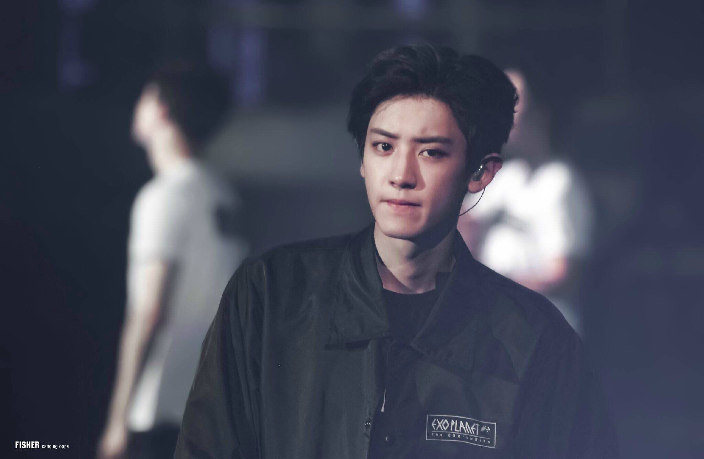

朴灿烈
朴灿烈（박찬열、Park Chanyeol），1992年11月27日出生于韩国首尔，仁荷大学研究生在读，韩国男子演唱组合EXO、EXO-K、EXO-SC成员，韩国男歌手、演员，主Rapper、副主唱同门面担当。
重要事件
- 2012年4月8日，随EXO-K发行首张迷你专辑《MAMA》并正式出道。4月8日，随EXO发行首张迷你专辑《MAMA》，并以EXO的子团体EXO-K主Rapper身份正式出道，专辑发行一个月后售出7万张。
- 2015年4月，出演个人首部电影《长寿商会》，饰演长寿超市老板女儿敏贞的男朋友“珉盛”，他凭此片在第51届百想艺术大赏中入围“男演员人气奖”。
- 2016年6月，与袁姗姗合作主演中韩合拍喜剧爱情片《所以……和黑粉结婚了》，在片中饰演韩流顶级明星“后准”一角，并与袁姗姗合唱该片的主题曲《我讨厌你》。
- 2021年3月29日，朴灿烈作为陆军现役士兵参军。
成就和荣誉
- 2012年获MAMA最佳亚洲新人团体奖。
- 2013年获得MAMA年度最佳专辑奖和亚洲偶像盛典最受欢迎组合奖。
- 2014年获Gaon Chart K-pop Awards人气赏和MAMA亚洲音乐盛典年度最佳专辑奖。
- 2015年第8届韩国电视剧节获得男子新人奖和韩流明星奖。
- 2016年第16届音乐风云榜年度盛典获最受欢迎海外偶像。
- 2017年获MMA年度艺人奖和MMA最佳舞蹈男团。
- 2018年获第32届韩国金唱片大赏PGA全球人气奖。
- 2019年TMEA腾讯音乐娱乐盛典年度最受欢迎海外歌手。
- 2020年亚洲流行音乐大奖2020海外最佳团体奖。
- 2021年获年度最佳海外团体奖。
主要作品
| 年份 | 专辑名称 |
| 2012年 | XOXO |
| 2014年 | Overdose |
| 2015年 | Love Me Right |
| 2016年 | Song for you |
| 2017年 | The war |
| 2018年 | DON'T MESS UP MY TEMPO |
| 2018年 | Love shot |
| 2019年 | What a life |
| 2020年 | 10亿点击 (1 Billion Views) |
生活照

生平
朴灿烈高中时曾与好友组建乐队。2008年，参加校服模特选拔大赛；同年，通过SMCasting System进入S.M Entertainment并成为练习生，并且与SUHO、KAI共同参演东方神起的UCC广告。